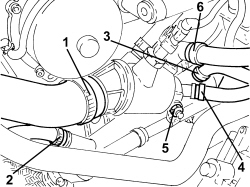
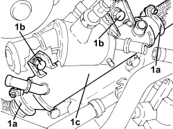
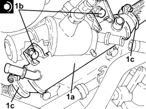

1080C80 EXHAUST GAS/WATER HEAT EXCHANGER FOR EGR SYSTEM - R.R
- Path
- Procedures > 10 ENGINE > 1080 EMISSION CONTROL SYSTEM > 1080C EXHAUST GAS RECIRCULATION SYSTEM (E.G.R.) > 1080C80 EXHAUST GAS/WATER HEAT EXCHANGER FOR EGR SYSTEM - R.R
- Kind
- repair procedure (removal / refitting; the operation number is the code)
- Applies to
- engines: 2.4 JTD 20v; all production periods
- Interactive page
- https://sloeber94.github.io/elrnDB-aBrrSpdr/en/#/946003026
Applies to: engines: 2.4 JTD 20v; all production periods
 Removing
Removing
 Refitting
RefittingOp. 5530B52 BATTERY SUPPORT/DRIP TRAY - R.R
Op. 1048B22 AIR SUPPLY HOSE FROM HEAT EXCHANGER TO INTAKE MANIFOLD - R + R
Op. 1016A10 SOUND-PROOFING COVER - R.R
1. Undo the radiator coolant drain plug.

Applies to: engines: 2.4 JTD 20v; all production periods
1. Loosen the band and disconnect the radiator upper coolant inlet hose, thermostat side.
2. Loosen the band and disconnect the coolant outlet pipe from the coolant/exhaust gas heat exchanger for the EGR system.
3. Loosen the band and disconnect the coolant inlet pipe from the coolant/exhaust gas heat exchanger for the EGR system.
4. Loosen the band and disconnect the coolant return pipe from the climate control system heater, thermostat side.
5. Undo the nut fixing the engine coolant return pipe from the engine oil heat exchanger.
6. Loosen the band and disconnect the coolant delivery pipe to the climate control system heater, thermostat side.

Applies to: engines: 2.4 JTD 20v; all production periods
1. Loosen the collars (1a), undo the bolts (1b) and remove the water/exhaust gas heat exchanger for the E.G.R. system (1c).

Applies to: engines: 2.4 JTD 20v; all production periods
Refitting
Removing1. Place the exhaust gas/water heat exchanger for the EGR valve (1a) back in its housing, secure by tightening bolts (1b) to the recommended torque and tighten the collars (1c).
Component | Fastening | dia | Value (daNm) | Validity |
|---|---|---|---|---|
E.G.R.system exhaust gas/ water heat exchanger - cylinder head side | Bolt | M8 | 2.3 ÷ 2.8 | 2.4 JTD 20v |

Applies to: engines: 2.4 JTD 20v; all production periods
- Connect the coolant delivery pipe to the climate control system heater, thermostat side, and tighten the band.
- Tighten the nut fixing the engine coolant return pipe from the engine oil heat exchanger.
- Connect the coolant return pipe from the climate control system heater, thermostat side, and tighten the band.
- Connect the coolant inlet pipe to the coolant/exhaust gas heat exchanger for the EGR system and tighten the band.
- Connect the coolant oulet pipe from the coolant/exhaust gas heat exchanger for the EGR system and tighten the band.
- Connect the radiator upper coolant inlet hose, thermostat side, and tighten the band.
- Tighten the coolant drain plug to the radiator.
Op. 1016A10 SOUND-PROOFING COVER - R.R
Op. 1048B22 AIR SUPPLY HOSE FROM HEAT EXCHANGER TO INTAKE MANIFOLD - R + R